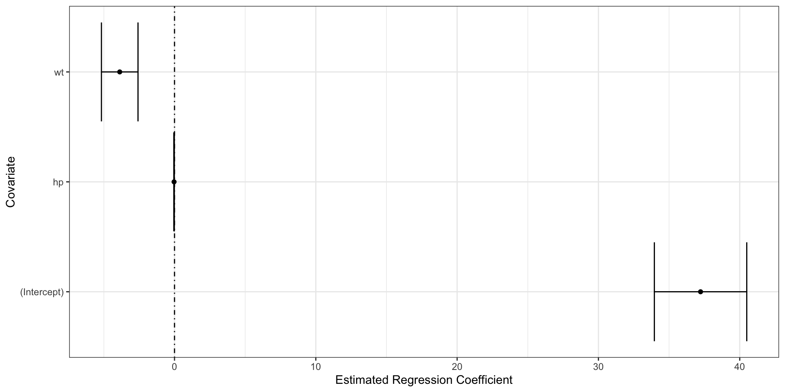

| Breakout | Teams |
|---|---|
| 1 | Nightshift Analysts (T) + Standard Deviants (R) |
| 2 | Point of Interest (T) + Green Apple (R) |
| 3 | Sounds Good (T) + Kitchen Nightmares (R) |
| 4 | Inspector Clouseau (T) + Urban Health Insight Group (R) |
| 5 | Cycle Paths (T) + House Busters (R) |
| 6 | The Mean, Green, Data-Analyzing Team (T) + Gridion Regression (R) |
| 7 | Weight Watchers (T) + Stats & The City (R) |
| 8 | Irish Mafia (R) |
| 9 | Wellness Warriors (R) |
Software Tools for Data Analysis
STA 9750
Michael Weylandt
Week 13
STA 9750 Week 13
Today:
- Tuesday Section: 2025-12-02
- Thursday Section: 2025-12-04
Lecture #11: Statistical Modeling in R
- Communicating Results (
quarto) ✅ RBasics ✅- Data Manipulation in
R✅ - Data Visualization in
R✅ - Getting Data into
R✅ - Statistical Modeling in
R⬅️
Today
Today
- Course Administration
- Warm-Up Exercise
- New Material
- Linear Models
- Computational Inference
- Predictive Models
- Wrap-Up
- Life Tip of the Day
Course Administration
GTA
Charles Ramirez is our GTA
- Wednesday Office Hours moved to 5:15-7:15 for greater access
- Give a bit of flexibility on the front end for CR to get off work
- Grading Meta-Review #03 after Peer Feedback
Mini-Project #04
MP#04 - Just the Fact(-Check)s, Ma’am!
Due 2025-12-05 at 11:59pm ET
Topics covered:
- Data Import
- HTTP Request Construction (Week 9)
- Tabular HTML Scraping (Week 11)
- \(t\)-tests
- Putting Everything Together
Grading in Progress
I owe you:
- MP#03 Grades & Meta-Review
- Selected Regrades
Course Support
- Synchronous
- MW Office Hours 2x / week: Tuesdays + Thursdays 5pm
- GTA Office Hours: Wednesdays at 5:15-7:15pm
- Asynchronous: Piazza (\(<20\) minute average response time)
Course Project
End of Semester Course Project:
- In-Class Final Presentations
- Last week of class or during finals week (optional)
- Individual Report
- 2025-12-18
- Group Report
- 2025-12-18
- Peer Evaluations
- 2025-12-18
See detailed instructions for rubrics, expectations, etc.
Course Project
- Proposals ✅
- Check-In ✅
- Final Presentation
- Final Reports
Final Presentation
Next week! Review the Rubric!
- Overarching Question
- Motivation and Context: Why are you doing this project?
- Prior Art: What have others done in this space? What gap are you filling?
- Data Used: What and why? “SWOT” it
- Specific Questions: What questions and how do they tie back?
- Results of Specific
- Implications for Overarching
- Next Steps / Future Work
Non-Technical Presentation - You’re a “consultant” asked by a client to investigate
Final Reports
Group and Individual Reports
- Submitted via GitHub and Brightspace
- Everyone submit a separate link to group report
Deadline on “final exam” day
No late work accepted (I have to submit grades in 3 days before family arrives!)
Project Peer Feedback
New peer feeback mechanism (feedback welcome!)
- You have 100 points to allocate to teammates
Can’t assign points to yourself
Additionally, 8 optional qualitative questions (Brightspace) for peer evaluation
Submit a copy for each teammate - I will anonymize to give advice
- Due on same day as reports
If you don’t submit, you won’t receive any points
Final Project Grading
Rubric is set high to give me flexibility to reward teams that take on big challenges
Hard rubric => Grades are curved generously
Multiple paths to success
If your project is “easy” on an element (data import in particular), that’s great! Don’t spend the effort over-complicating things. Effort is better spent elsewhere
Pre-Assignments
No more pre-assignments!
Thank you for these!
Course Feedback
Reflection on course:
- How far have you come?
- What have you learned?
- What was helpful? What was unhelpful?
This is in addition to the Baruch central course assesments.
Course Feedback
Used to improve future course offerings. Previous changes:
- Added a second round of project feedback
- Help students “scope” projects suitably
- More applied analytics than programming exercises in HW
- Other programming resources already online;
- Many students have prior experience (Python, SQL)
- More interest in Analytics than Software Engineering
- Added GitHub and Portfolio Construction
- Give students evidence of skills to share with employers
- Increased interactivity of course materials
Course Feedback
Plans for future improvement:
- Move to 3 MPs
- More time to focus on final presentations
- Extra Credit for in-class engagement (?)
- Move final presentations into finals week (?)
Other thoughts welcome!
Review Exercise
Review Exercise
Analysis of the countries of the world
In this final review exercise, you will use a combination of the skills developed in this course to create a map of the countries of the world.
See Lab #13 for details.
Breakout Rooms
Statistical Models in R
Formula Notation
R was designed for statistical analysis (originally called S)
Major contributions
data.frame/ tidy structure- Formula language (“Wilkinson-Rogers notation”)
Formula Notation
In R, a formula is a special object defined by a ~
Most common structure
y ~ x1 + x2
Predict variable y using x1 and x2
- Modern
Ruses formulas in many other contexts - Various extensions provided by packages
Modeling Functions
Basic modeling function: lm (linear model)
Modeling Functions
Call:
lm(formula = body_mass ~ flipper_len, data = penguins)
Coefficients:
(Intercept) flipper_len
-5780.83 49.69 - Provide model (
formula) and data (data.frame) instead of \(X, y\) - By default automatically includes an intercept term
Modeling Functions
Call:
lm(formula = body_mass ~ flipper_len + species, data = penguins)
Coefficients:
(Intercept) flipper_len speciesChinstrap speciesGentoo
-4031.48 40.71 -206.51 266.81 Automatically:
- Encodes categorical (
factor) variables?Cfor details
- Removes extra / redundant columns
Modeling Functions
Call:
lm(formula = body_mass ~ flipper_len * bill_dep, data = penguins)
Coefficients:
(Intercept) flipper_len bill_dep
-36097.064 196.074 1771.796
flipper_len:bill_dep
-8.596 *creates both ‘main’ effects and interactions
Modeling Functions
Call:
lm(formula = body_mass ~ flipper_len * species, data = penguins)
Coefficients:
(Intercept) flipper_len
-2535.837 32.832
speciesChinstrap speciesGentoo
-501.359 -4251.444
flipper_len:speciesChinstrap flipper_len:speciesGentoo
1.742 21.791 *of continuous and categorical creates ANCOVA
Modeling Functions
Many extensions
Family: gaussian
Link function: identity
Formula:
body_mass ~ s(flipper_len) + s(bill_dep, by = species)
Estimated degrees of freedom:
1.56 1.96 1.00 4.39 total = 9.91
GCV score: 106441.7 Fits a mixed-effect non-linear regression
Accessors
Helper functions to access fitted models:
Accessors
Call:
lm(formula = body_mass ~ flipper_len * bill_dep + species, data = penguins)
Residuals:
Min 1Q Median 3Q Max
-900.40 -238.12 -40.12 228.86 1085.32
Coefficients:
Estimate Std. Error t value Pr(>|t|)
(Intercept) -4.844e+03 5.298e+03 -0.914 0.3611
flipper_len 2.732e+01 2.699e+01 1.012 0.3123
bill_dep 2.001e+02 2.945e+02 0.679 0.4973
speciesChinstrap -1.316e+02 5.192e+01 -2.534 0.0117 *
speciesGentoo 1.284e+03 1.572e+02 8.166 6.51e-15 ***
flipper_len:bill_dep -9.004e-02 1.495e+00 -0.060 0.9520
---
Signif. codes: 0 '***' 0.001 '**' 0.01 '*' 0.05 '.' 0.1 ' ' 1
Residual standard error: 331.3 on 336 degrees of freedom
(2 observations deleted due to missingness)
Multiple R-squared: 0.8319, Adjusted R-squared: 0.8294
F-statistic: 332.5 on 5 and 336 DF, p-value: < 2.2e-16Accessors
In-sample / training prediction:
1 2 3 5 6 7 8 9
3536.088 3425.933 3767.175 3953.280 4114.393 3370.697 4059.188 3734.055
10 11 12 13 14 15 16 17
4041.210 3370.937 3253.055 3359.674 4249.574 4409.196 3473.547 3949.683
18 19 20 21 22 23 24 25
4310.849 3557.933 4380.573 3282.907 3510.456 3832.665 3528.570 3234.669
26 27 28 29 30 31 32 33
3726.523 3568.992 3543.295 3286.946 3547.228 3091.116 3348.770 3550.685
34 35 36 37 38 39 40 41
3649.683 3584.667 4358.365 4004.618 3473.685 3646.349 3686.382 3433.145
42 43 44 45 46 47 48 49
3840.178 3627.582 4102.980 3308.480 3785.068 3616.823 3521.615 3620.406
50 51 52 53 54 55 56 57
4249.574 3480.928 3752.137 3620.406 4168.735 3579.941 3774.117 3444.264
58 59 60 61 62 63 64 65
3861.936 3150.175 3942.338 3308.480 4332.949 3326.821 3726.647 3319.386
66 67 68 69 70 71 72 73
3690.091 3438.661 3788.765 3382.561 4099.392 3821.660 3711.885 3646.936
74 75 76 77 78 79 80 81
3982.659 3547.223 3858.429 3444.955 3741.432 3213.485 3967.934 3466.569
82 83 84 85 86 87 88 89
3719.903 3708.201 3971.549 3627.823 4161.456 3913.139 3722.836 3832.665
90 91 92 93 94 95 96 97
3785.068 3947.038 4042.282 3345.161 3554.255 3433.358 4264.409 3748.477
98 99 100 101 102 103 104 105
3884.079 2980.693 3781.480 3671.813 4336.307 3091.663 4004.618 3825.399
106 107 108 109 110 111 112 113
3649.683 3724.236 4004.618 3223.682 4000.892 3570.903 4084.993 3660.980
114 115 116 117 118 119 120 121
4092.056 4158.140 3847.595 3404.175 4325.323 3429.959 3722.836 3415.036
122 123 124 125 126 127 128 129
4172.287 3094.759 4037.976 3150.955 4052.101 3591.249 3821.927 3499.815
130 131 132 133 134 135 136 137
4152.595 3620.406 4037.358 3807.130 3961.028 3488.327 3547.223 3572.963
138 139 140 141 142 143 144 145
4277.969 3235.117 3697.517 3551.367 3415.036 3129.468 3455.744 3470.758
146 147 148 149 150 151 152 153
3638.615 3748.477 3557.933 3730.674 3734.055 3396.713 4012.327 4593.082
154 155 156 157 158 159 160 161
5645.496 4729.996 5136.843 4932.508 4621.302 4846.576 5180.825 4577.078
162 163 164 165 166 167 168 169
5095.145 4761.861 5247.505 4761.861 4898.577 4820.575 5201.160 4621.302
170 171 172 173 174 175 176 177
5214.684 4776.450 5222.623 4974.450 4932.508 4880.489 5167.427 4679.518
178 179 180 181 182 183 184 185
5040.932 4922.395 5022.862 4766.228 5206.763 5258.638 4722.075 4724.430
186 187 188 189 190 191 192 193
5771.046 5116.634 5387.019 4735.779 5541.519 4587.236 4968.045 4605.370
194 195 196 197 198 199 200 201
5462.316 4657.534 5048.826 5366.684 4876.212 4693.765 5444.335 4663.424
202 203 204 205 206 207 208 209
5167.427 4748.112 4990.454 4784.344 5282.509 4966.475 5224.788 4641.637
210 211 212 213 214 215 216 217
5152.685 4750.440 5310.513 4623.504 5160.634 4798.020 5563.784 4982.443
218 219 220 221 222 223 224 225
5735.175 4888.419 5601.704 5008.480 5230.580 5048.826 5286.750 5286.750
226 227 228 229 230 231 232 233
5038.686 5048.826 5591.689 4722.075 5387.019 4806.013 5482.561 4854.479
234 235 236 237 238 239 240 241
5286.750 4872.577 5418.451 4727.795 5773.337 4992.494 4956.406 4763.990
242 243 244 245 246 247 248 249
5771.046 5100.756 5737.430 4854.479 5454.431 4942.658 5434.276 5193.320
250 251 252 253 254 255 256 257
5132.584 4602.212 5552.219 5126.721 5719.477 5113.215 5360.403 4832.086
258 259 260 261 262 263 264 265
5221.639 4838.691 5270.998 4659.771 4885.198 5084.950 5547.870 5007.110
266 267 268 269 270 271 273 274
5645.496 4912.317 5591.689 5201.160 5420.707 4761.861 4896.367 5330.669
275 276 277 278 279 280 281 282
4908.772 5169.908 3540.254 3934.937 3803.451 3583.949 4015.194 3676.252
283 284 285 286 287 288 289 290
3235.614 3723.470 3799.872 4058.951 3547.688 4029.896 3250.283 3807.980
291 292 293 294 295 296 297 298
3342.480 4080.931 4051.660 3239.137 3616.917 3672.117 3147.253 3441.403
299 300 301 302 303 304 305 306
3173.539 3839.989 3617.364 3869.332 3836.911 3946.146 3496.263 4255.776
307 308 309 310 311 312 313 314
3173.539 4299.292 3191.862 3986.602 3745.120 3519.817 3690.368 4510.159
315 316 317 318 319 320 321 322
3302.642 4237.616 4292.771 3338.444 3861.969 3478.892 3643.068 3880.767
323 324 325 326 327 328 329 330
3488.846 4361.987 3558.318 3585.133 3446.958 3971.751 3456.344 4150.211
331 332 333 334 335 336 337 338
3301.799 3832.867 3276.822 4186.569 3960.980 3865.558 4190.532 3206.875
339 340 341 342 343 344
3453.107 4270.520 3833.665 3620.764 4202.192 3840.266 Accessors
Out-of-sample / test prediction:
Accessors
For just lm:
[1] add1 alias anova case.names coerce
[6] confint cooks.distance deviance dfbeta dfbetas
[11] drop1 dummy.coef effects extractAIC family
[16] formula fortify hatvalues influence initialize
[21] kappa labels logLik model.frame model.matrix
[26] nobs plot predict print proj
[31] qqnorm qr residuals rstandard rstudent
[36] show simulate slotsFromS3 summary variable.names
[41] vcov
see '?methods' for accessing help and source codeEven more for other models
Tidy tools - broom
The broom package provides tidyverse tools for working with models:
tidy: gives information about model components (coefficients)glimpse: gives information about the model as a wholeaugment: applies the model to observations
Note: broom is not core tidyverse and needs to be loaded explicitly
broom
Fit a linear model:
Call:
lm(formula = mpg ~ wt + hp, data = mtcars)
Coefficients:
(Intercept) wt hp
37.22727 -3.87783 -0.03177 Predict miles per gallon of 1973 cars using weight and horsepower
broom::glance
glance - model summary info
# A tibble: 1 × 12
r.squared adj.r.squared sigma statistic p.value df logLik AIC BIC
<dbl> <dbl> <dbl> <dbl> <dbl> <dbl> <dbl> <dbl> <dbl>
1 0.827 0.815 2.59 69.2 9.11e-12 2 -74.3 157. 163.
# ℹ 3 more variables: deviance <dbl>, df.residual <int>, nobs <int>Don’t confuse with glimpse (summarize a data frame)
broom::tidy
tidy - model component info
# A tibble: 3 × 5
term estimate std.error statistic p.value
<chr> <dbl> <dbl> <dbl> <dbl>
1 (Intercept) 37.2 1.60 23.3 2.57e-20
2 wt -3.88 0.633 -6.13 1.12e- 6
3 hp -0.0318 0.00903 -3.52 1.45e- 3Get more with conf.int=TRUE
# A tibble: 3 × 7
term estimate std.error statistic p.value conf.low conf.high
<chr> <dbl> <dbl> <dbl> <dbl> <dbl> <dbl>
1 (Intercept) 37.2 1.60 23.3 2.57e-20 34.0 40.5
2 wt -3.88 0.633 -6.13 1.12e- 6 -5.17 -2.58
3 hp -0.0318 0.00903 -3.52 1.45e- 3 -0.0502 -0.0133broom::tidy
tidy returns a data.frame and works with tidyverse tools:

broom::augment
augment - apply the model (to training data by default)
# A tibble: 32 × 10
.rownames mpg wt hp .fitted .resid .hat .sigma .cooksd .std.resid
<chr> <dbl> <dbl> <dbl> <dbl> <dbl> <dbl> <dbl> <dbl> <dbl>
1 Mazda RX4 21 2.62 110 23.6 -2.57 0.0443 2.59 1.59e-2 -1.01
2 Mazda RX4 … 21 2.88 110 22.6 -1.58 0.0405 2.62 5.46e-3 -0.623
3 Datsun 710 22.8 2.32 93 25.3 -2.48 0.0602 2.59 2.07e-2 -0.985
4 Hornet 4 D… 21.4 3.22 110 21.3 0.135 0.0475 2.64 4.72e-5 0.0533
5 Hornet Spo… 18.7 3.44 175 18.3 0.373 0.0369 2.64 2.74e-4 0.146
6 Valiant 18.1 3.46 105 20.5 -2.37 0.0672 2.60 2.16e-2 -0.948
7 Duster 360 14.3 3.57 245 15.6 -1.30 0.117 2.63 1.26e-2 -0.533
8 Merc 240D 24.4 3.19 62 22.9 1.51 0.116 2.62 1.68e-2 0.620
9 Merc 230 22.8 3.15 95 22.0 0.806 0.0600 2.63 2.19e-3 0.321
10 Merc 280 19.2 3.44 123 20.0 -0.779 0.0469 2.63 1.55e-3 -0.308
# ℹ 22 more rowsbroom::augment
augment - pass newdata argument for out of sample evaluation
# A tibble: 1 × 5
mpg wt hp .fitted .resid
<dbl> <dbl> <dbl> <dbl> <dbl>
1 35 2.96 169 20.4 14.6Modern Toyota is 14.6mpg better than expected in 1974
broom::augment
augment - pass newdata argument without \(y\) for pure prediction
# A tibble: 1 × 3
wt hp .fitted
<dbl> <dbl> <dbl>
1 2.94 200 19.5Actual mpg is closer to 34!
broom
broom can be used with most models and tests:
Pearson's product-moment correlation
data: mpg and disp
t = -8.7472, df = 30, p-value = 9.38e-10
alternative hypothesis: true correlation is not equal to 0
95 percent confidence interval:
-0.9233594 -0.7081376
sample estimates:
cor
-0.8475514 broom
broom can be used with most models and tests:
# A tibble: 1 × 8
estimate statistic p.value parameter conf.low conf.high method alternative
<dbl> <dbl> <dbl> <int> <dbl> <dbl> <chr> <chr>
1 -0.848 -8.75 9.38e-10 30 -0.923 -0.708 Pearson'… two.sided broom
Easily extends to groupwise analysis using nest/unnest and map:
# A tibble: 2 × 6
# Groups: am [2]
am n estimate conf.low conf.high p.value
<dbl> <int> <dbl> <dbl> <dbl> <dbl>
1 1 13 -0.835 -0.949 -0.526 0.000383
2 0 19 -0.793 -0.917 -0.529 0.0000519So the correlation is larger for automatic transmissions (am=1), but we have more samples and a slightly smaller \(p\)-value for manual transmissions.
Exercise
Return to Lab #13 and practice manipulating the output of lm and the broom functions.
Computational Inference
Statistical Inference
Recall the basic theory of statistical tests - “goodness of fit”
- Select a baseline model (‘null hypothesis’)
- Select a quantity of interest (‘test statistic’)
- Determine distribution of test statistic under null hypothesis
- If observed test statistic is extreme (vis-a-vis null distribution of test statistic):
- -> “doesn’t fit” and reject null
Statistical Theory
75+ Years of Theory
- Pick a null + test statistic
- Compute “null distribution”
\(Z\)-values, \(t\)-values, \(p\)-values, etc.
Typically requires ‘big math’
Alternative:
- Let a computer do the hard work
Monte Carlo Simulation
Using a computer’s pseudo-random number generator (PRNG)
Repeat:
- Generate \(X_1, X_2, X_3, \dots\)
- Compute \(f(X_1), f(X_2), f(X_3), \dots\)
Sample average (LLN)
\[\frac{1}{n} \sum_{i=1}^n f(X_i) \to \mathbb{E}[f(X)]\]
Holds for arbitrary related quantities (quantiles, medians, variances)
Monte Carlo Simulation
Example: suppose we have \(X_i \buildrel{\text{iid}}\over\sim \mathcal{N}(0, \sigma^2)\) and we want to test \(H_0: \sigma=1\)
How to test?
The Math Way
Per Cochran’s theorem, \(S \sim \sqrt{\frac{\chi^2_{n-1}}{n-1}} = \frac{1}{\sqrt{n-1}} \chi_{n-1}\) has a \(\chi\) (not \(\chi^2\)) distribution
So reject \(H_0\) if \(S\) above critical value (1.26)
The Computer Way
To get a critical value
# A tibble: 1 × 1
`quantile(test_statistic_null, 0.95)`
<dbl>
1 1.24The Computer Way
To get a \(p\)-value:
# A tibble: 1 × 1
p_val
<dbl>
1 0.267Exercise
Return to Lab #13 and implement these ideas to test a rather strange null hypothesis.
infer
The infer package automates much of this for common tests

Predictive Modeling in tidymodels
Agenda
- Predictive Modeling with
tidymodels
Adapted from Case Study
tidymodels
Strength of R:
- Thousands of authors contributing packages to CRAN
Weakness of R:
- Thousands of authors contributing slightly incompatible packages to CRAN
No two modeling packages have exactly the same API. Makes changing between interfaces cumbersome
tidymodels
tidymodels attemps to provide a uniform interface to a wide variety of predictive Machine Learning tools
Advantages:
- Easy to swap out different algorithms to find the best
Disadvantages:
- Harder to take advantage of the strengths of each approach
I have dedicated my academic life to the differences in these methods, but 99% of the time, “black-box” prediction is good enough. In STA 9890/9891, we get into the weeds - not here.
ML vs Statistical Pipelines
Statistics / Data Science:
- Find the model that fits the data best
- Model should capture all important data features
- Interpretability
- History: Grounded in lab sciences where experiments are expensive and data is limited
ML vs Statistical Pipelines
Machine Learning:
- Find the model that predicts the data best
- No “perfect” model - just the best one we’ve found so far
- Black-box techniques are great, if effective
- History: Silicon Valley “at scale”
Validation based on of-of-sample or test predictions
Validating Predictive Power
How to check whether a model predicts well?
Need more data! But where to get more data?
- Actually get more data (hard, expensive, slow)
- Split data into parts - test/training split
- Cross-Validation
- Resampling
Today, we’ll primarily use a combination: Test/Train split & Cross-Validation!
Cross-Validation

Cross-Validation is done on the estimator, not the fitted algorithm
tidymodels
tidymodels workflow:
- Initial Split
- Pre-Process
- Fit (many) models
- Select best
- Refit
- Test Set Assessment
tidymodels is very punny, so a bit hard to tell which step is which…
Acquire Data
library(tidymodels); library(readr)
hotels <-
read_csv("https://tidymodels.org/start/case-study/hotels.csv") |>
mutate(across(where(is.character), as.factor))
glimpse(hotels)Rows: 50,000
Columns: 23
$ hotel <fct> City_Hotel, City_Hotel, Resort_Hotel, R…
$ lead_time <dbl> 217, 2, 95, 143, 136, 67, 47, 56, 80, 6…
$ stays_in_weekend_nights <dbl> 1, 0, 2, 2, 1, 2, 0, 0, 0, 2, 1, 0, 1, …
$ stays_in_week_nights <dbl> 3, 1, 5, 6, 4, 2, 2, 3, 4, 2, 2, 1, 2, …
$ adults <dbl> 2, 2, 2, 2, 2, 2, 2, 0, 2, 2, 2, 1, 2, …
$ children <fct> none, none, none, none, none, none, chi…
$ meal <fct> BB, BB, BB, HB, HB, SC, BB, BB, BB, BB,…
$ country <fct> DEU, PRT, GBR, ROU, PRT, GBR, ESP, ESP,…
$ market_segment <fct> Offline_TA/TO, Direct, Online_TA, Onlin…
$ distribution_channel <fct> TA/TO, Direct, TA/TO, TA/TO, Direct, TA…
$ is_repeated_guest <dbl> 0, 0, 0, 0, 0, 0, 0, 0, 0, 0, 0, 0, 0, …
$ previous_cancellations <dbl> 0, 0, 0, 0, 0, 0, 0, 0, 0, 0, 0, 0, 0, …
$ previous_bookings_not_canceled <dbl> 0, 0, 0, 0, 0, 0, 0, 0, 0, 0, 0, 0, 0, …
$ reserved_room_type <fct> A, D, A, A, F, A, C, B, D, A, A, D, A, …
$ assigned_room_type <fct> A, K, A, A, F, A, C, A, D, A, D, D, A, …
$ booking_changes <dbl> 0, 0, 2, 0, 0, 0, 0, 0, 0, 0, 0, 0, 0, …
$ deposit_type <fct> No_Deposit, No_Deposit, No_Deposit, No_…
$ days_in_waiting_list <dbl> 0, 0, 0, 0, 0, 0, 0, 0, 0, 0, 0, 0, 0, …
$ customer_type <fct> Transient-Party, Transient, Transient, …
$ average_daily_rate <dbl> 80.75, 170.00, 8.00, 81.00, 157.60, 49.…
$ required_car_parking_spaces <fct> none, none, none, none, none, none, non…
$ total_of_special_requests <dbl> 1, 3, 2, 1, 4, 1, 1, 1, 1, 1, 0, 1, 0, …
$ arrival_date <date> 2016-09-01, 2017-08-25, 2016-11-19, 20…Initial Split
# Stratified sampling to ensure balance
splits <- initial_split(hotels,
strata = children)
hotel_train <- training(splits)
hotel_test <- testing(splits)
hotel_train# A tibble: 37,500 × 23
hotel lead_time stays_in_weekend_nig…¹ stays_in_week_nights adults children
<fct> <dbl> <dbl> <dbl> <dbl> <fct>
1 City_H… 217 1 3 2 none
2 City_H… 2 0 1 2 none
3 Resort… 95 2 5 2 none
4 Resort… 143 2 6 2 none
5 City_H… 67 2 2 2 none
6 City_H… 6 2 2 2 children
7 City_H… 130 1 2 2 none
8 City_H… 27 0 1 1 none
9 Resort… 16 1 2 2 none
10 Resort… 46 0 2 2 none
# ℹ 37,490 more rows
# ℹ abbreviated name: ¹stays_in_weekend_nights
# ℹ 17 more variables: meal <fct>, country <fct>, market_segment <fct>,
# distribution_channel <fct>, is_repeated_guest <dbl>,
# previous_cancellations <dbl>, previous_bookings_not_canceled <dbl>,
# reserved_room_type <fct>, assigned_room_type <fct>, booking_changes <dbl>,
# deposit_type <fct>, days_in_waiting_list <dbl>, customer_type <fct>, …Pre-Process
A recipe is a set of steps used to ‘pre-process’ the data:
holidays <- c("AllSouls", "AshWednesday", "ChristmasEve", "Easter",
"ChristmasDay", "GoodFriday", "NewYearsDay", "PalmSunday")
lr_recipe <-
recipe(children ~ ., data = hotels) |>
step_date(arrival_date) |>
step_holiday(arrival_date, holidays = holidays) |>
step_rm(arrival_date) |>
step_dummy(all_nominal_predictors()) |>
step_zv(all_predictors()) |>
step_normalize(all_predictors())
lr_recipe── Recipe ──────────────────────────────────────────────────────────────────────── Inputs Number of variables by roleoutcome: 1
predictor: 22── Operations • Date features from: arrival_date• Holiday features from: arrival_date• Variables removed: arrival_date• Dummy variables from: all_nominal_predictors()• Zero variance filter on: all_predictors()• Centering and scaling for: all_predictors()Pre-Process
Declare response (children) and predictors (. = everything else)
Pre-Process
Use arrival_date to identify holiday arrivals:
Pre-Process
Convert categorical variables to numeric encoding:
Pre-Process
Drop variables that don’t vary:
Pre-Process
Standardize (mean 0, standard deviation 1) everything:
Fit Models
Select Best
Find a grid of parameters
Perform CV splits:
Select Best
Define a workflow:
Fit workflow to a grid of parameters:
Select Best
Visual examination
Select Best
# A tibble: 5 × 7
penalty .metric .estimator mean n std_err .config
<dbl> <chr> <chr> <dbl> <int> <dbl> <chr>
1 0.00108 roc_auc binary 0.875 5 0.00470 pre0_mod11_post0
2 0.00137 roc_auc binary 0.874 5 0.00470 pre0_mod12_post0
3 0.000853 roc_auc binary 0.874 5 0.00470 pre0_mod10_post0
4 0.000672 roc_auc binary 0.874 5 0.00471 pre0_mod09_post0
5 0.00174 roc_auc binary 0.874 5 0.00467 pre0_mod13_post0# A tibble: 1 × 2
penalty .config
<dbl> <chr>
1 0.00108 pre0_mod11_post0Refit Best Model
══ Workflow [trained] ══════════════════════════════════════════════════════════
Preprocessor: Recipe
Model: logistic_reg()
── Preprocessor ────────────────────────────────────────────────────────────────
6 Recipe Steps
• step_date()
• step_holiday()
• step_rm()
• step_dummy()
• step_zv()
• step_normalize()
── Model ───────────────────────────────────────────────────────────────────────
Call: glmnet::glmnet(x = maybe_matrix(x), y = y, family = "binomial", alpha = ~1)
Df %Dev Lambda
1 0 0.00 0.079270
2 2 2.76 0.072230
3 2 5.53 0.065810
4 3 7.76 0.059960
5 3 9.97 0.054640
6 4 12.13 0.049780
7 4 13.93 0.045360
8 5 15.31 0.041330
9 5 16.81 0.037660
10 5 17.95 0.034310
11 5 18.85 0.031270
12 6 19.87 0.028490
13 6 20.75 0.025960
14 6 21.49 0.023650
15 8 22.21 0.021550
16 8 22.97 0.019640
17 8 23.58 0.017890
18 10 24.12 0.016300
19 10 24.68 0.014850
20 10 25.15 0.013530
21 11 25.56 0.012330
22 11 25.93 0.011240
23 14 26.26 0.010240
24 14 26.60 0.009328
25 14 26.90 0.008500
26 17 27.17 0.007745
27 21 27.59 0.007057
28 26 28.05 0.006430
29 28 28.55 0.005859
30 30 29.00 0.005338
31 31 29.41 0.004864
32 37 29.82 0.004432
33 38 30.26 0.004038
34 43 30.65 0.003679
35 46 31.06 0.003352
36 49 31.42 0.003055
37 52 31.73 0.002783
38 56 32.01 0.002536
39 59 32.27 0.002311
40 64 32.48 0.002105
41 67 32.68 0.001918
42 69 32.85 0.001748
43 75 33.00 0.001593
44 78 33.14 0.001451
45 84 33.27 0.001322
46 85 33.38 0.001205
...
and 47 more lines.Test Set Assessment
Test Set Assessment
# A tibble: 12,500 × 26
.pred_class .pred_children .pred_none hotel lead_time stays_in_weekend_nig…¹
<fct> <dbl> <dbl> <fct> <dbl> <dbl>
1 children 0.762 0.238 Resor… 136 1
2 children 0.920 0.0795 Resor… 47 0
3 none 0.441 0.559 City_… 56 0
4 none 0.0451 0.955 City_… 80 0
5 none 0.00286 0.997 City_… 297 1
6 none 0.0570 0.943 City_… 423 1
7 none 0.0198 0.980 Resor… 209 2
8 none 0.0198 0.980 City_… 134 0
9 none 0.0833 0.917 City_… 39 0
10 none 0.0492 0.951 City_… 5 2
# ℹ 12,490 more rows
# ℹ abbreviated name: ¹stays_in_weekend_nights
# ℹ 20 more variables: stays_in_week_nights <dbl>, adults <dbl>,
# children <fct>, meal <fct>, country <fct>, market_segment <fct>,
# distribution_channel <fct>, is_repeated_guest <dbl>,
# previous_cancellations <dbl>, previous_bookings_not_canceled <dbl>,
# reserved_room_type <fct>, assigned_room_type <fct>, …Test Set Assessment
my_metrics <- metric_set(accuracy, precision, recall, ppv, npv, sens, mcc)
augment(lr_best_fit, hotel_test) |>
my_metrics(truth=children, estimate=.pred_class)# A tibble: 7 × 3
.metric .estimator .estimate
<chr> <chr> <dbl>
1 accuracy binary 0.936
2 precision binary 0.731
3 recall binary 0.346
4 ppv binary 0.731
5 npv binary 0.945
6 sens binary 0.346
7 mcc binary 0.476Exercise
Return to Lab #13 and work through the remainder of the hotel stay case study
You’ll need to work through the data import elements as well
Other tidymodels tools
- Model Stacking
- Probabilistic Predictions
- Uncertainty Bounds (Conformal Inference)
- Multilevel (Mixed-Effect) Models
- Fairness Audits
More Reading
Wrap Up
Wrap Up
Statistical Models in R:
- Classical models (
lm) - Computational Inference
- Predictive Models (
tidymodels)
Upcoming Work
Upcoming work from course calendar
- Mini-Project #04 due on 2025-12-05 at 11:59pm ET
- Mini-Project #04 peer feedback due 2025-12-19
- End of Semester Project Submissions
Almost there!